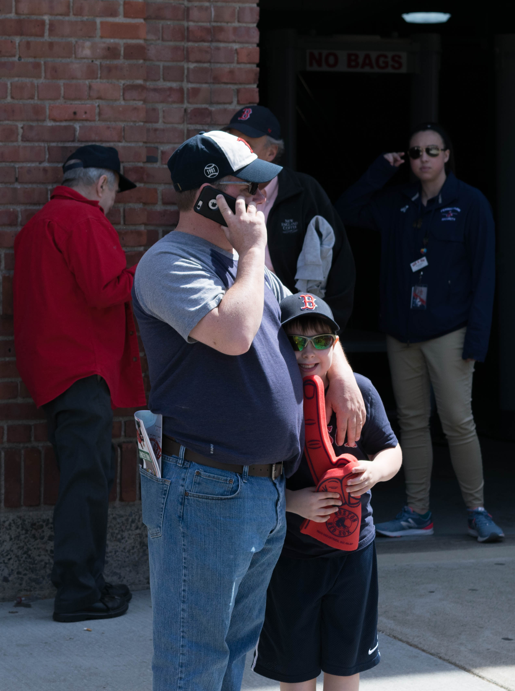
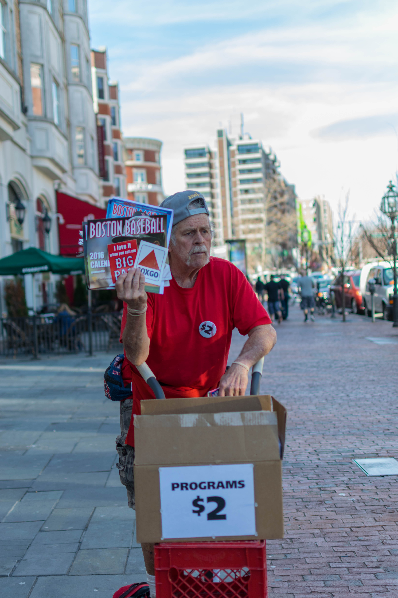
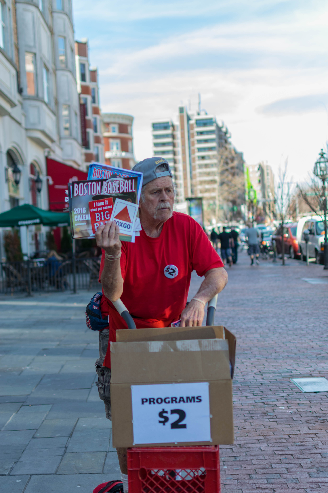
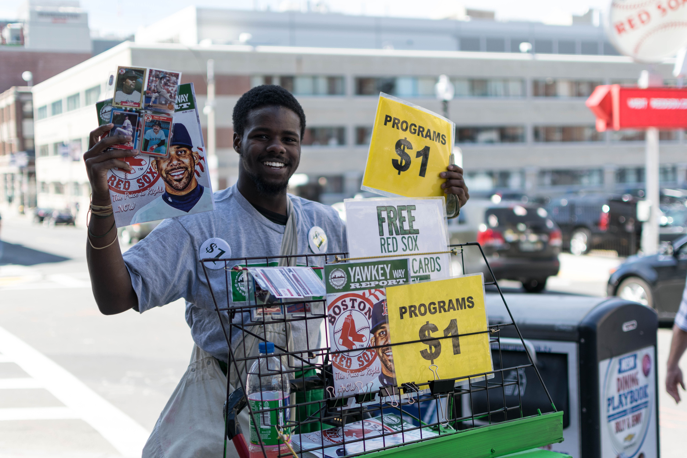
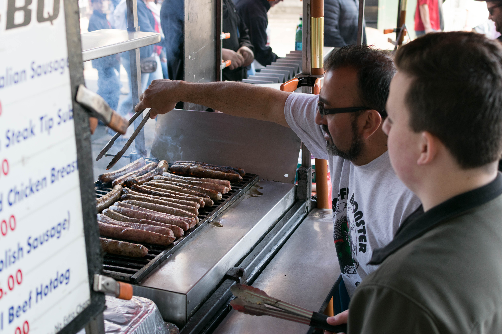
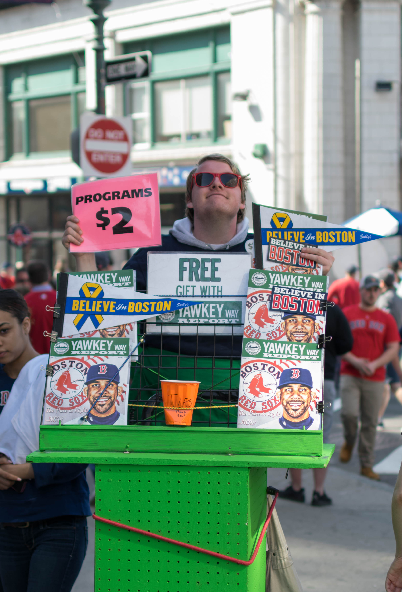
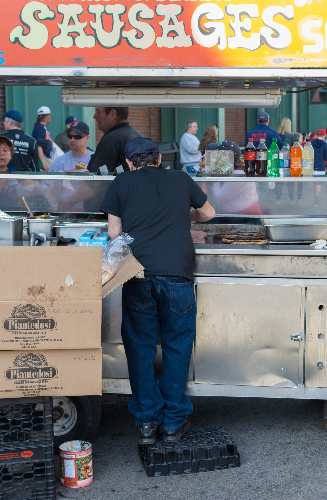
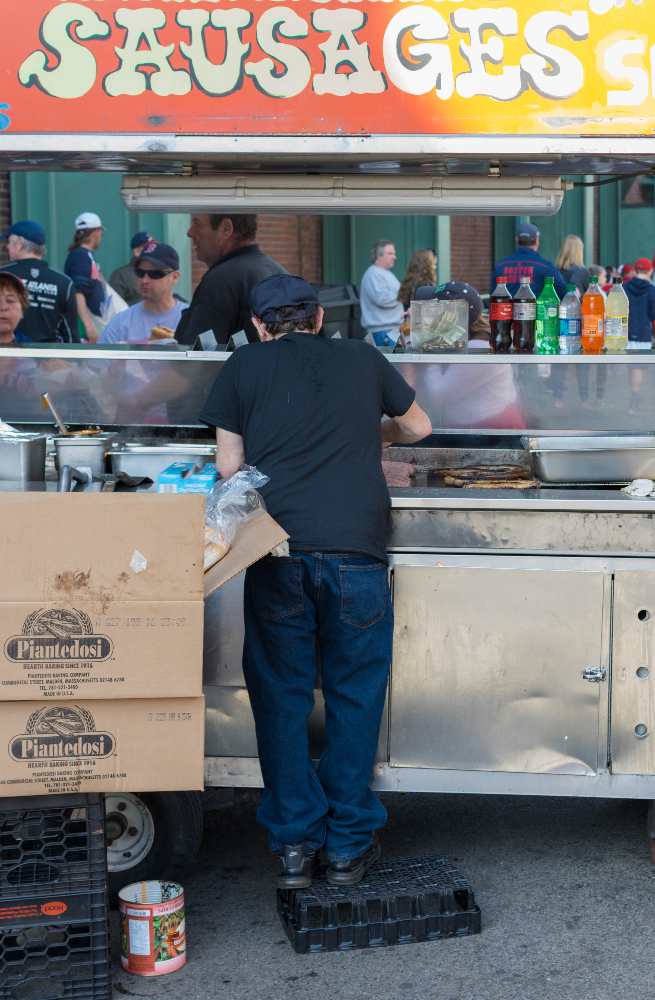
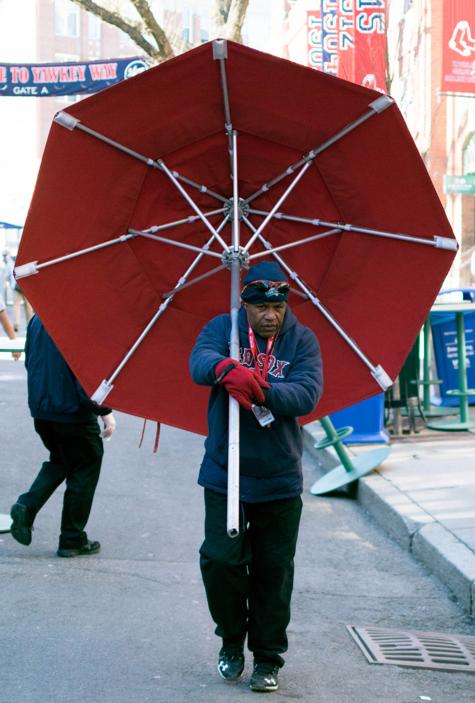
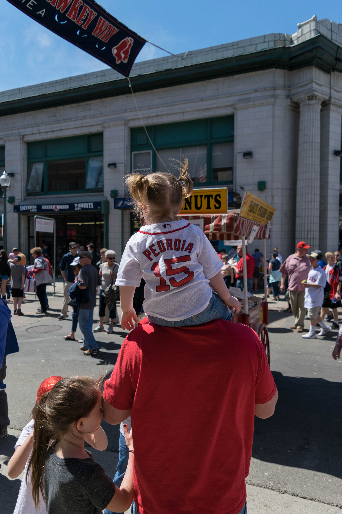

Yawkey
&
Lansdowne
by Eric Huppert
The famous streets, Yawkey Way and Lansdowne Street, that border Boston's Fenway Park are alive and bustling for hours before Red Sox games, and it's not just because of the game. The park, with its brick facades and iconic dull green paint, the people that work around it, and the fans bring an electric feeling to the air that can be appreciated by even those who have no interest in baseball. For each of the 81 Red Sox home games each year, Yawkey and Lansdowne close down to traffic for what amounts to baseball-themed street party.

Fenway Park opened on September 25, 1911 and is now the oldest stadium in all of Major League Baseball. In the years since, it has become one of the sports most prized locations and a major destination for baseball fans.

Much of the appeal of the stadium is the feeling of tradition and strong baseball history. Instead of building a new stadium to replace Fenway, as was proposed in the late nineties, the team has made numerous renovations. The ballpark has kept up to modern standards while maintaining the classic, traditional feel that it is know for. It is considered by many to be one of the best places to watch a baseball game. Just outside the brick walls of the stadium, Yawkey Way and Lansdowne Street are similarly reminiscent of an older time.

The experience of taking in a game at Fenway park begins long before the turnstiles. When approaching the park, fans are barked at by peanut and program salesmen that stand on old milk crates that lift them up over the crowd. Some of these salesmen have been doing it for decades and their calls are well-rehearsed and almost melodic. The less experience among them can sometimes struggle to find the right sound, but make up for it with their enthusiasm for the job.
 

Yawkey Way and Lansdowne Street, which lie under the shadow of the ballpark, are lined with foods vendors, souvenir vendors, and restaurants, and the streets fill to the brim with thousands of fans on gameday. Some fans take in the sights and sounds from the outdoor seating of crowded restaurants, and others people-watch on bar patios a level above the street.
From the time that the first sausages hit the grill a few hours before the first pitch, the streets are cloaked in a sausage-smelling smoke that is hard to avoid. There are even more salesmen here hawking their foods or wares over the constant chatter of fans strolling around the streets. The brightly colored signs of vendors and the neon displays of bars and restaurants pop out next to the simple brick of the stadiums walls. Especially during a year like this year when the team is doing well, the air is full of excitement and anticipation for the game for hours before it starts.

Many fans of visiting teams jump at the opportunity to watch their team play at this historic venue and to experience the unique atmosphere around Fenway.
"It's old, but it's nice," says out-of-town fan Steve Guggenheim who came to watch his hometown team, the Oakland A's. When asked to compare to his team's ballpark, he says, "It's really hard to compare to Fenway."

Among the thousands that fill these streets before games are many more experienced Fenway guests. For these long-time fans, the constant fanfare and showmanship of the area has lost much of its appeal. "I'm around here all the time, I'm jaded," says season ticket holder Dave Sprik, who purchased his first season tickets in 2004 before the Red Sox won their first World Series in over 80 years.

What most fans can agree on, though, is that the area around the park has experienced dramatic changes over the last decade or so. The Fenway neighborhood has had many large new building and commercial development projects in recent years. Closer to the ballpark, many new bars and restaurants have sprung up trying to capitalize on the gameday crowds.


The people most affected by the changes in the area have been the independent food vendors that work outside the ballpark. Competition from new restaurants in the area has limited their business. Even the Red Sox have had a hand in making life more difficult for the vendors.
 

In 2002, the team took over control of Yawkey Way and, in doing so, removed the ability for vendors to sell on that street before games. Now, only ticketed customers can enter the street for the last couple hours before first pitch, and the team has installed food stands of their own that only add to the competition in the area. The decision to close Yawkey was very unpopular among the food vendors.

Many of vendors have been working outside of Fenway Park for decades, and they are something of a dying breed. The increased competition from the team and from the restaurant has driven many of them out of business, and the job itself is inherently difficult.

Vendors have to show up hours before games to set up their stands. After serving customers before the game, many have to wait around through the duration of the game when the streets are quiet in order to serve customers leaving the park. Because they work outside, inclement weather that can be frequent at the beginning and end of the is a headache. Long homestands can be gruelling for the vendors, and by the end of them, most are very worn out and have hoarse voices.


When he first got a job selling sausages for a company called The Sausage Guy, it was "a dream come true" for longtime Red Sox fan Dave Viera. That was over twenty years ago. He has become numb to the atmosphere of Yawkey and Lansdowne now that he experiences it many nights a week, and the changes of the ballpark and the neighborhood have made the job more difficult. Some of the enjoyment of being a fan has gone away for him because he is forced to be at the park many nights a week instead of going on his own accord.


Despite the challenges, it is clear that many of the vendors enjoy what they do. There is camaraderie between the vendors, who often pass the time before fans arrive by joking around and catching up with one another.
The lively environment and interactions with customers makes the job enjoyable for Viera. He says, "If I hit the lottery, I'd stand out here and sell sausage, because I like interacting with the people."